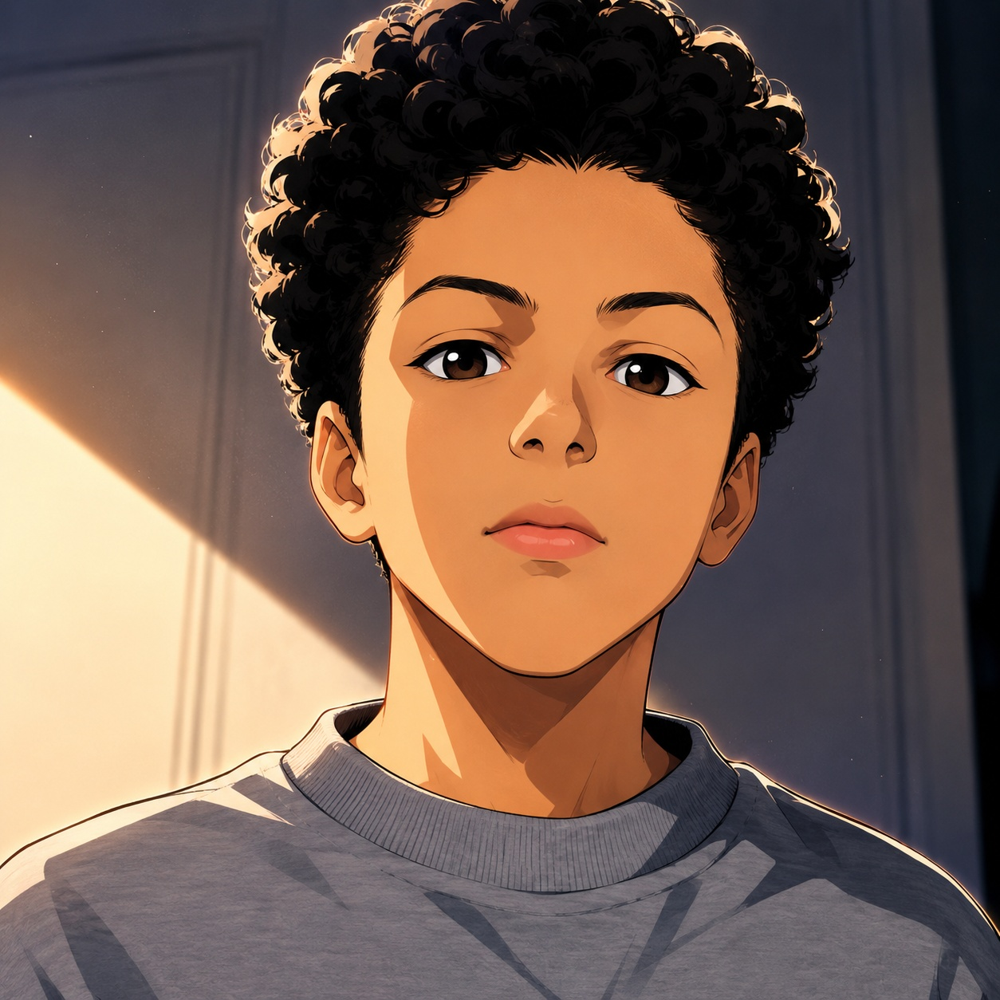
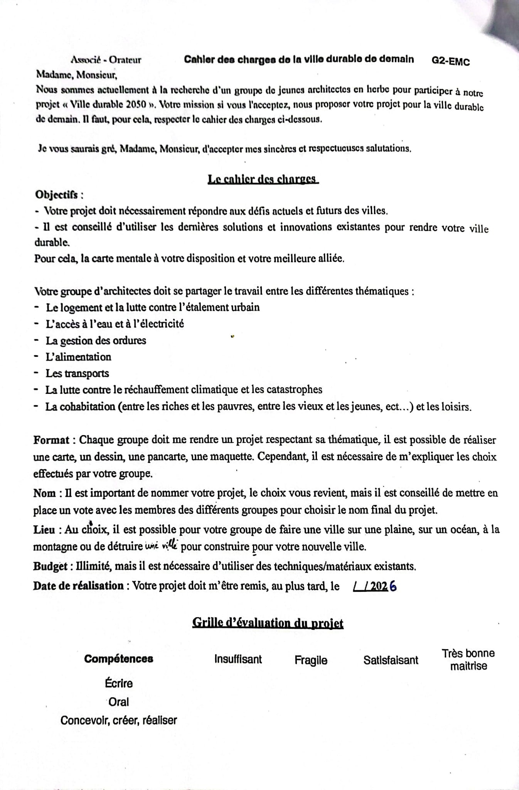

L'ARCHITECTE
Le concepteur de NEOTERRA 2050


L'architecte présente son projet
D'où je viens
Je m'appelle Haroun Jelassi et j'ai 11 / 12 ans, en 6ᵉ B au collège La Petite Plume.
Quand Mme / M. ____, ma professeure de matière enseignée, nous a proposé le sujet de notre grand projet de l'année — imaginer et représenter une cité du futur — j'ai tout de suite eu envie d'aller plus loin que ce qui était demandé. Pas juste une ville sur Terre. Pas juste un dessin. Un endroit où personne n'a jamais vécu : Mars.
Depuis tout petit, j'aime construire avec mes mains — Legos, cabanes, maquettes, plans dessinés… — et imaginer des mondes qui n'existent pas. À l'école, mes matières préférées sont à compléter (sciences, arts, techno, histoire…). En dehors de l'école, j'aime à compléter (sport, lecture, jeux vidéo…).
NEOTERRA 2050, c'est ma façon d'imaginer ce que serait la vie loin de la Terre, dans un endroit où il faut tout réinventer : les maisons, l'eau, l'air, la nourriture, et même la manière de vivre ensemble.
Références & parti pris
Le parti pris de NEOTERRA 2050 s'appuie sur quatre familles de références, articulées de manière à éviter l'écueil du pastiche tout en assumant une identité forte.
A. Références architecturales historiques. Modénature des coupoles classiques — architecture islamique médiévale, basiliques byzantines — pour leur rationalité structurelle face aux pressions différentielles. Ce vocabulaire formel a été retenu pour son adéquation aux contraintes de mise sous pression des dômes martiens.
B. Références architecturales contemporaines. Travaux sur les architectures de l'extrême (bases polaires, habitats désertiques, projets de bases lunaires). Préciser : architectes ou bureaux d'études — ex. Foster + Partners (projet Mars), BIG-Bjarke Ingels, ICON (impression 3D)…
C. Références scientifiques. Publications NASA et ESA sur l'établissement humain durable hors-Terre, notamment les contraintes liées aux radiations cosmiques, à la gravité réduite (0,38 g) et à la gestion thermique. Ces contraintes constituent le cahier des charges programmatique du projet.
D. Références culturelles. Littérature et iconographie de l'anticipation : Préciser : Bradbury, Kim Stanley Robinson, films ou romans… Ces sources informent la dimension narrative et symbolique du projet, sans en compromettre la rigueur fonctionnelle.
Itinéraire de conception
La maquette physique constitue le livrable principal du projet, accompagnant les documents graphiques. Sa construction s'est déroulée en sept phases distinctes, chacune documentée photographiquement.
Programmation
Plan masse, échelle 1/1000. Définition du programme bâti et du parti pris d'implantation sur le plateau MDF de 70 × 70 cm.
 Photo à ajouter
Photo à ajouter(plateau nu & esquisses)
Modelage du substrat
Topographie martienne en polystyrène extrudé : collines, cratères, dénivelés.
 Photo à ajouter
Photo à ajouter(blocs sculptés)
Consolidation
Application du papier mâché : surface continue et solide, prête à recevoir la peinture.
 Photo à ajouter
Photo à ajouter(papier mâché en cours)
Traitement chromatique
Peinture acrylique multi-couches : ocres, rouilles, blancs givrés. Trois passages pour la profondeur.
 Photo à ajouter
Photo à ajouter(peinture appliquée)
Implantation du bâti
Pose des volumes principaux : grand dôme, place centrale, modules d'habitation, serres, usine d'énergie, aire de lancement.
 Photo à ajouter
Photo à ajouter(bâtiments installés)
Peuplement
Placement des cinq figurines à l'échelle : astronaute, adultes et enfants, témoignant du caractère habité et pérenne de la cité.
(figurines en place)
Finalisation
Détails & scénographie : panneaux, voie de circulation, signalétique, drapeau. La cité prend vie.
(vue finale)
Durée totale de chantier : ≈ 45 heures sur X semaines — à préciser
Note d'intention
Le présent projet répond à une question éminemment programmatique : concevoir un habitat humain sur un site dépourvu d'atmosphère respirable, soumis à des contraintes thermiques, radiatives et logistiques extrêmes.
Le parti pris retenu — la ville-cité plutôt que la base scientifique — assume un déplacement délibéré du cahier des charges habituel. Là où la littérature spécialisée traite massivement de l'installation opérationnelle (3 à 8 occupants, missions de 18 mois), NEOTERRA propose une réponse domestique et culturelle, à horizon 2050+, pour une population pérenne de plusieurs centaines d'habitants.
Ce déplacement de focale entraîne trois conséquences de conception :
1. L'espace public devient une composante prioritaire —
d'où la place centrale et la pluralité des programmes : serres,
lieu de culte, marché.
2. La modénature s'autorise une dimension symbolique —
d'où les coupoles, dont la lecture excède la pure rationalité structurelle.
3. Les figurines intègrent des enfants nés sur place —
actant le caractère multigénérationnel de l'occupation.
NEOTERRA 2050 ne prétend pas à la faisabilité immédiate. Il s'agit d'une proposition — au sens architectural du terme — destinée à élargir l'espace du pensable pour une génération qui pourrait, à terme, être amenée à habiter ailleurs que sur Terre.
— JELASSI Haroun
Architecte en chef · Projet NEOTERRA 2050